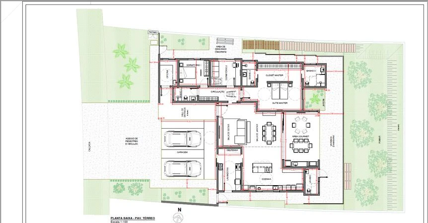
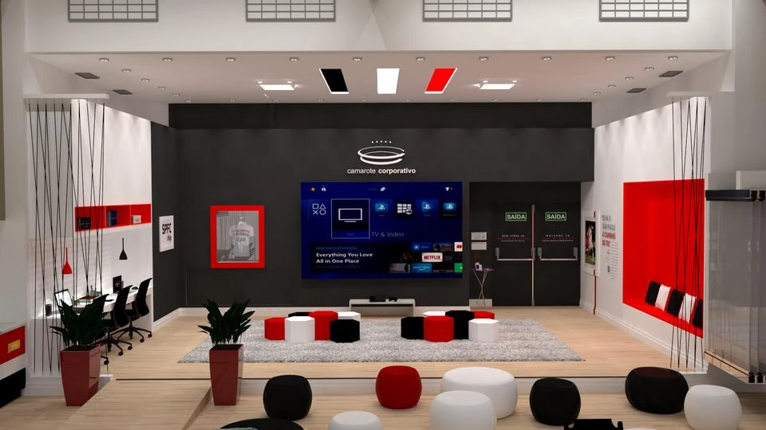
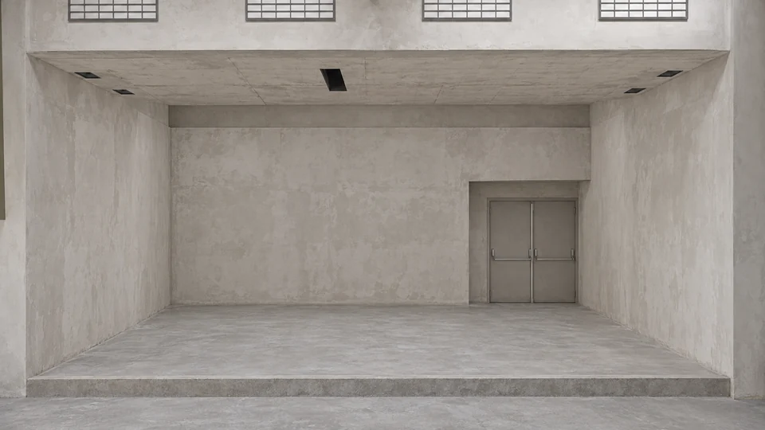

Layout residencial
Amostra de caderno executivo. Desenho técnico.Projeto: Fernanda Santoro e Amanda Tiziotto. AutoCAD: Amanda Tiziotto.
Executivo, compatibilização e visualização 3D para complementar o trabalho do seu escritório.
Conversar sobre parceriaConheça os trabalhos
Projeto autoral em destaque
Um projeto de Amanda Tiziotto no estádio Morumbi. Conheça diferentes vistas do camarote, do auditório e das áreas de apoio, apresentadas em imagens 3D.
Arraste a divisão para visualizar os acabamentos e a composição do projeto.


Arraste para comparar. No teclado, use as setas.
Comparação ilustrativa: o antes foi criado por IA a partir do render e não é um registro do espaço antes da obra. O depois é uma visualização 3D do projeto autoral de Amanda Tiziotto.
Da definição técnica à apresentação visual, apoio para diferentes etapas do projeto.
Busca um projeto para sua casa? Conheça interiores.Contrate o serviço que seu escritório precisa. O escopo é alinhado conforme o projeto e a etapa de desenvolvimento.
Desenvolvimento dos desenhos e detalhamentos que organizam as informações do projeto para a execução. O portfólio inclui plantas, cotas, pontos elétricos e cadernos de obra.
Revisão das relações entre as informações dos desenhos. Uma mudança de layout, por exemplo, pode exigir ajustes nos pontos elétricos e em outros elementos relacionados.
Modelagem e imagens 3D para visualizar espaços, materiais e a proposta arquitetônica. Trabalhos autorais e em parceria, com identificação da participação de cada profissional.
Uma seleção de executivos, imagens 3D e projetos autorais. Abra as imagens para olhar mais de perto.
Projeto: Fernanda Santoro e Amanda Tiziotto. AutoCAD: Amanda Tiziotto.
Projeto: Fernanda Santoro e Amanda Tiziotto. AutoCAD: Amanda Tiziotto.
Projeto: Fernanda Santoro e Amanda Tiziotto. AutoCAD: Amanda Tiziotto.
Projeto: Fernanda Santoro e Amanda Tiziotto. Render: Amanda Tiziotto.
Projeto: Fernanda Santoro e Amanda Tiziotto. Render: Amanda Tiziotto.
Projeto: Fernanda Santoro, Vitória Estrioli e Amanda Tiziotto. Render: Amanda Tiziotto.
Projeto autoral: Amanda Tiziotto. Camarote corporativo no estádio Morumbi, SPFC.
Projeto autoral: Amanda Tiziotto.
Projeto autoral: Amanda Tiziotto.
9 trabalhos na seleção.

Formada pela Universidade Metodista de Piracicaba, minha trajetória reúne experiência em escritórios de arquitetura, projetos executivos e de aprovação, interiores e maquetes eletrônicas.
Atuo ao lado de arquitetos e construtoras no desenvolvimento técnico e na representação dos projetos. Meu portfólio reúne trabalhos autorais e colaborações com outros profissionais.
O contato e o desenvolvimento são feitos diretamente comigo.
Do primeiro alinhamento à entrega, cada etapa tem seu momento de desenvolvimento e validação.
Conversamos sobre o projeto, as necessidades e o serviço a desenvolver.
Definimos o programa de necessidades e o cronograma do trabalho.
Você recebe o desenvolvimento por etapas, com validação antes de avançar quando necessário.
Os ajustes são revisados no conjunto dos desenhos antes da entrega combinada.
Os serviços incluem executivo e compatibilização, além de maquete eletrônica e renderização. Na conversa inicial, definimos qual apoio faz sentido e o escopo da proposta.
Sim. O portfólio reúne projetos colaborativos e trabalhos de renderização e desenho técnico em parceria. A participação de cada profissional é identificada nos exemplos.
O desenvolvimento é enviado por etapas para validação. As alterações são revisadas considerando os desenhos relacionados, para manter a coerência entre as informações.
Entre em contato pelo WhatsApp e conte qual serviço precisa, em que etapa está o projeto e o prazo que tem em mente. Escopo, cronograma e condições são definidos na proposta.
Executivo, compatibilização ou imagens 3D: me conte a etapa do projeto e o apoio que você procura.
Chamar a Amanda no WhatsApp(19) 98176-7271